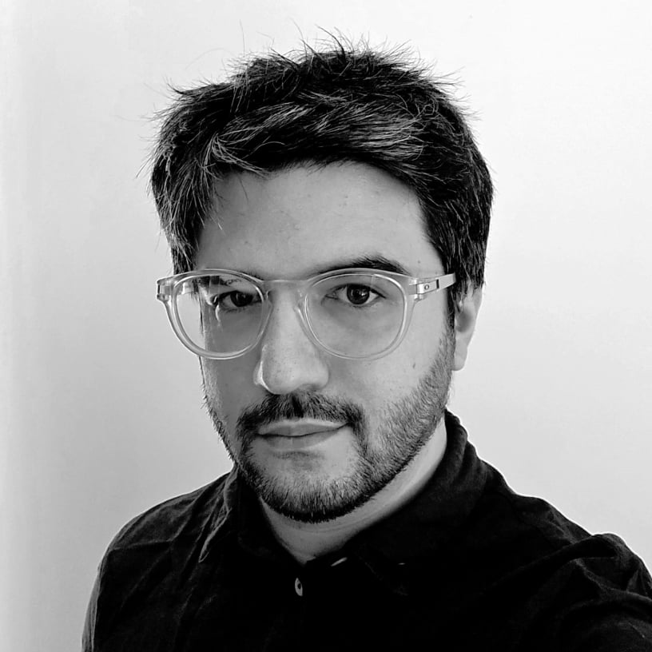

Silfr és un servei independent d’enginyeria de producte.
Suport tècnic per a empreses que desenvolupen i fabriquen producte físic.
Especialitzat en desenvolupament de producte, disseny CAD, industrialització i control tècnic.
Treballo tant en suport tècnic continu com en projectes tancats amb abast definit.
Experiència en el llançament de productes comercials, incloent-hi solucions amb carcasses en fabricació additiva i altres tecnologies de producció.

Enginyer de producte amb més de 9 anys d’experiència en R+D, desenvolupament de dispositius veterinaris i medicalitzats, fabricació additiva, validació industrial i disseny centrat en l’usuari.
Trajectòria consolidada en entorns d’innovació aplicada, combinant capacitat tècnica, lideratge d’equips i visió estratègica de producte.
Especialitzat en la transició de prototips a fabricació industrial, optimització de materials i processos, i coordinació interdepartamental.
Enfocat a generar solucions viables, escalables i sostenibles amb impacte directe en l’eficiència operativa i l’experiència d’usuari.
Alta orientació a resultats, millora contínua i disponibilitat per a mobilitat geogràfica.